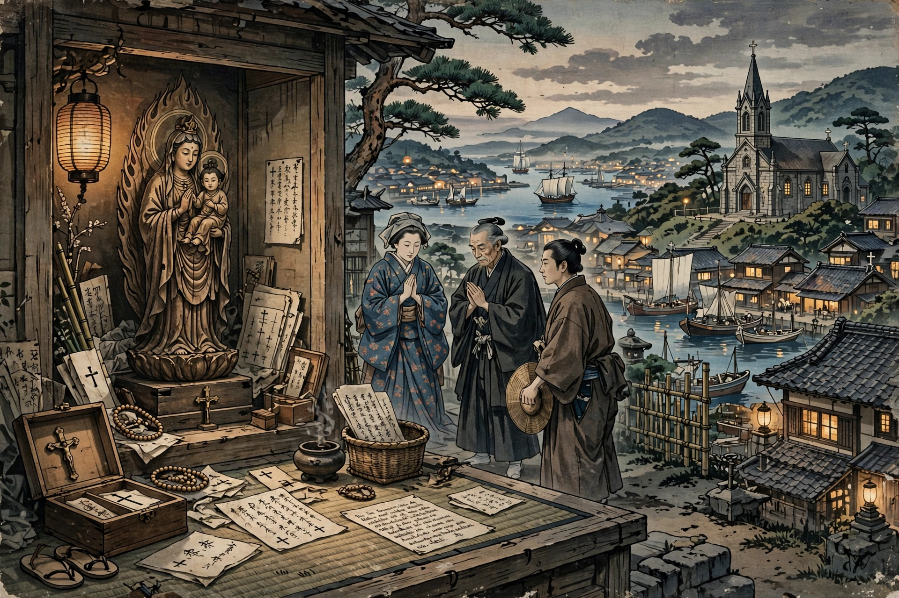

| Kirishitan | |
|---|---|
 | |
| Language | From Portuguese cristão |
| Period | 1549 – Edo-period suppression |
Kirishitan (吉利支丹, from Portuguese cristão) were Japanese Christians of the 16th and 17th centuries, converted after Jesuit missionary Francis Xavier arrived in 1549.
Jesuits, then Franciscans and Dominicans, won converts especially in Kyushu; Christian daimyo such as Ōmura Sumitada gave Nagasaki to the Jesuits. Estimates reach some 300,000 believers by 1600, with a distinct Japanese Christian literature, seminaries and printing.
Toyotomi Hideyoshi's 1587 expulsion edict and the crucifixion of the Twenty-six Martyrs of Nagasaki (1597) began repression; the Tokugawa shogunate banned Christianity outright in 1614, used fumie trampling tests, and crushed the Shimabara Rebellion (1637–38). Surviving "Hidden Christians" (Kakure Kirishitan) preserved syncretic rites in secret for over two centuries until religious freedom returned in 1873.